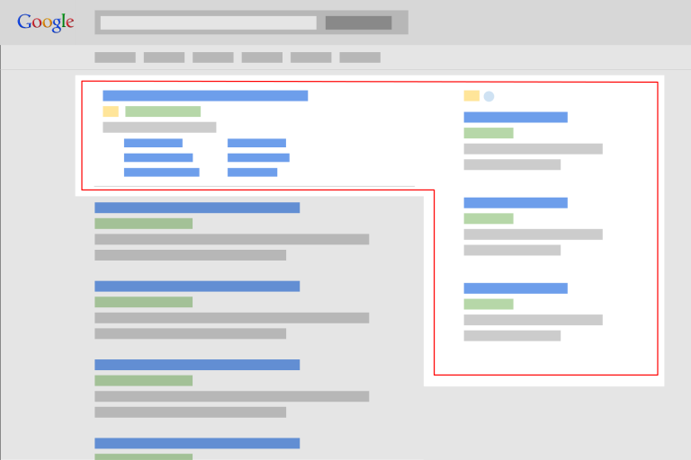

Google reklamiranje ili jednostavnije kako da budete među prvim rezultatima na Googlu kada neko ukuca ključne reči pretrage koje su bitne za vaš biznis. Veoma transparetno reklamiranje, jer plaćate samo za rezultat, tj. kada osoba (kupac) dođe na vaš sajt ili poseti određenu stranicu. Naš tim istražuje ključne reči , kreira kampanju i određuje budžet.

Evo jednostavnog primera:
Ako ste vi stomatolog iz Beograda, istražimo koje sve reči i fraze ljudi kucaju i koriste da bi se informisali o izboru stomatologa u Beogradu. Tako odredimo koje su to reči i grupe reči i kada neko ukuca stomatolog beograd, stomatolog banovo brdo, snimanje zuba Voždovac i dođe do vašeg sajta.
U sklopu paketa Google reklamiranja nudimo sledeće usluge:
Danas su svi na Facebook-u. Dok rade, odmaraju, putuju ljudi provode veći deo dana na Facebooku i koriste različite uređaje (telefone, tablete, računare). Vi to možete iskoristiti i vaš oglas može biti tačno prikazan vašoj ciljnoj grupi. Uz pomoć Facebook oglasa se veoma precizno može odrediti kome će se oglas prikazivati: npr. ljubitelji pasa koji žive u Kragujevcu i koji imaju preko 30 godina.
Naš tim će istražiti i realizovati da se vaši oglasi izdvajaju i budu plasirani vašim kupcima i ljudima koje su zainteresovani vaš posao ili proizvod.
Facebook reklamiranje je veoma precizno vaš oglas se može prikazivati na više pozicija: u novostima na zidu, sa desne strane, kao video oglas ili kombinacija proizvoda.
Pored Facebook reklama, naš tim takođe radi i Instagram reklame.
U sklopu Facebook reklmanog paketa nudimo vam:
Danas sajt mora da bude moderan, pregledan i da se prikazuje na svim uređajima (telefonima, tabletima, računarima). Ako vaš sajt nije takav onda je vaše prisustvo na Internetu loše. Sajt je stub poslovanja na Internetu, vaša lična karta i ogledalo firme. Ljudi će uvek prvo posetiti sajt informisati se i to će im biti prvi kontakt sa vama.
Svakako da želite da im to prvo iskustvo koje steknu sa vama bude prijatno i odluče se za saradnju ili kupe od vas nešto.
U tom slučaju sajt mora biti moderan, pregledan, sa čitljivim tekstom i fontovima. Naš studio radi pregledne, moderne sajtove koji su jasno vidljivi na svim uređajima. Ukoliko nemate još svoj sajt ili imate sajt sa kojim niste zadovoljni ili je zastareo naš tim će vam unaprediti Internet prisustvo i učiniti da se izdvojite.
Landing stranica ili prodajna stranica može biti bilo koja stranica na vašem sajtu na koju korisnik prvo dođe. Ako Landing stranica nije dobro optimizovana i jasna korisnik vrlo brzo odlazi i izgubili ste potencijalnu prodaju. Da bi oglasi funkcionisali, najbitnija je kvalitetna i jasna prodajna stranica koja će ispuniti vaš cilj i olakšati kupcu da kupi vaš proizvod, poruči uslugu, prijavi se za neki kurs, preuzme katalog i sl.
Kada korisnik dođe na Landing stranicu, treba da mu za manje od minut bude jasno sve i da postoji poziv na akciju. Ukoliko korisniku nije nešto jasno ili je stranica konfuzna zauvek ste ga izgubili.
Landing stranica je najbitnija stranica na sajtu. Kupac može uraditi akciju i kupiti vaš proizvod ili uslugu samo od posete te jedne stranice i zato ta stranica mora da bude profesionalno urađena i jasna.
Dopustite da vaš Internet nastup i oglašavanje vodi tim profesionalaca i posmatrajmo zajedno kako vaš biznis raste i napreduje.